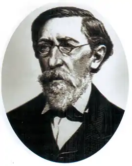

Максимович Михайло Олександрович
(1804-1873)
вчений-природознавець, історик, фольклорист, письменник Народився 3 вересня 1804 року на хуторі Тимківщина Золотоніського повіту Полтавської губернії у родині збіднілого дворянина, предки якого у XVII—XVIII століттях займали високі посади в козацькому війську, зокрема Самійло Величко згадує про переяславського знатного військового товариша Василя Максимовича. Виховувався під впливом дядьків по матері, Іллі Максимовича, доктора права та філософії Харківського університету, та Романа Максимовича, викладача грецької та римської словесності у Московському університеті. Початкову освіту здобув у Золотоніському Благовіщенському монастирі, потім вступив до Новгород-Сіверської гімназії, де почав збирати українські народні пісні. По закінченні Новгород-Сіверської гімназії 1819 року вступив на філологічне відділення Московського університету. Провчившись два роки, перейшов на природниче відділення, де вивчав фізику й математику. 1823 року, по закінченні навчання, залишений для наукової роботи. Того ж року публікує свою першу наукову працю "Про систему рослинного царства". 1824 року вийшла в світ перша книга М.Максимовича "Головні особливості зоології, або Наука про тварин". У той період продовжує досліджувати фольклор та етнографію. 1827 року виходить збірник "Малоросійські пісні, видані М.Максимовичем". Того ж року захищає магістерську дисертацію на тему "Про системи рослинного царства". 1833 року вийшла "Книга Наума про великий Божий світ", що містить науково-популярні розповіді про будову Землі, сонячної системи, Галактики. Ця книга протягом сорока років одинадцять разів перевидавалася. 1833 року М.Максимович здобуває ступінь доктора біологічних наук та звання професора, стає завідуючим кафедрою ботаніки Московського університету. 1834 року виходить його збірник "Українські народні пісні". У травні 1834 року М. Максимовича запрошують до щойно створеного Київського університету святого Володимира, де він спершу працює професором, а з жовтня того ж року стає першим ректором. З 1835 року у зв’язку з хворобою йде з посади ректора і залишається професором. Присвячує себе вивченню української та російської історії, досліджує "Слово про Ігорів похід", 1837 року публікує його переклад російською мовою.1839 року написав працю "Сказання про Коліївщину", яку цензура заборонила друкувати. 1840 року видає перший номер історичного альманаху "Киевлянин". 1843 року публікує наукову працю "Про Петра Конашевича Сагайдачного". До 1845 року читає лекції у Київському університеті, працює у Київській археографічній комісії, де вперше познайомився з Т.Шевченком. Того ж року через погіршення здоров’я виходить на пенсію, оселяється на хуторі Михайлова Гора Золотоніського повіту Полтавської губернії. Виїжджає для роботи в архівах та бібліотеках до Москви, Петербурга, Києва, публі-кує багато історичних праць. Листується і зустрічається з багатьма діячами науки і культури, зокрема з Т.Шевченком, В.Бєлінським, Д.Писарєвим, М.Гоголем. Бере участь у наукових дискусіях, заперечує норманську теорію походження Русі-України, розвінчує погодінську теорію, за якою Україна — це лише Південь Росії, її "окраїна". 1856 року публікує на цю тему "Філологічні листи до М.Погодіна", у яких захищає самобутність українського народу, його культури та мови. 1857 року друкує переклад "Слова про Ігорів похід" українською мовою. 1859 року М.Максимович видав перший номер альманаху "Українець", в якому вміщено багато матеріалів з історії України. Того ж року на хутір Михайлову Гору приїжджає Т.Шевченко, який написав там портрет Михайла Максимовича та його дружини Марії Василівни. 1860 року публікує полемічну статтю "Оборона українських повістей Гоголя". У травні 1861 року М.Максимович бере участь у похороні Т.Шевченка у Каневі, пише вірш "На смерть Т.Г.Шевченка". 1871 року М.Максимовича обрано членом-кореспондентом Петербурзької Академії наук. Того ж року він бере участь у Третьому Всеросійському з’їзді природознавців у Києві. У Петербурзі побачили світ "Листи про Київ та спогади про Тавриду". 10 грудня 1873 року М.Максимович помер. Михайло Максимович завдяки різнобічності свого обдаровання залишив однаково помітний слід як у галузі природознавства, ботаніки, хімії, зоології, фізики, якими він активно займався у 1823—1834 роках, так і в галузях мовознавства, фольклору, етнографії, історії, археології, що їм він присвятив пізніший період своєї діяльності аж до останніх днів життя. Максимович зробив значний внесок у підготовку двох великих відкриттів у природознавстві. Ще в ранніх своїх працях він висловлював гіпотези, які пізніше було підтверджено грунтовними фундаментальними дослідженнями, — про обмін речовин і клітинну будову живих організмів. Важливим відкриттям Максимовича були його докази про еволюцію тваринного світу, причинами якої є зміна умов довколишнього середовища. Світоглядним підгрунтям поглядів Максимовича у природознавстві були матеріалізм М.Ломоносова та натурфілософські ідеї Шеллінга, які вчений засвоїв на лекціях М.Павлова. Вiн розвивав шелінгіанську теорію розвитку і єдності реального та ідеального, суб’єктивного та об’єктивного світу. Вчений стверджував, що методом природознавства як науки є проникнення у внутрішню суть проблеми, створення стрункої системи знань. Обстоюючи ідею матеріальної єдності світу, доводячи, що все в природі складається з єдиної всезагальної речовини-матерії, він переконував, що органічна природа виникає на певному етапі з неорганічної природи у процесі її складних перетворень, а існуюча реальність не залежить від свідомості. Природа проникає у свідомість людини через органи почуттів. Наші знання про природу є відображенням предметів і явищ, які існують реально, а не є втіленням якоїсь ідеї. Максимович не сприймав також абсолютизації раціональних форм освоєння дійсності, вузького емпіризму, виступав за єдність теорії з практикою, аналізу й синтезу, вимагав конкретного історичного підходу до вивчення явищ природи, культури, суспільного життя, врахування історичного досвіду, умов та рівня науки того чи іншого часу. Водночас він висловлював новаторські для свого часу думки, що науку, техніку, людський розум слід скерувати не на революційні зміни й створення чогось нового, а на об’єктивне вивчення, засвоєння й розумне використання вже створеного природою. Ці думки, втілені у найголовніших природознавчих працях вченого — "Про системи рослинного царства", "Головні особливості зоології, або Наука про тварин", "Книга Наума про великий Божий світ", на багато років попередили дослідження Чарльза Дарвіна й поставили Максимовича в ряд фундаторів вітчизняної природознавчої науки. Лекціями Максимовича на кафедрі ботаніки Московського університету захоплювалися О.Герцен і М.Лермонтов. Наполеглива праця і великі здібності сприяли тому, що у 1833 році, коли М.Максимовичу було лише 29 років, йому присуджено науковий ступінь доктора біологічних наук і звання ординарного професора. Ще під час захисту магістерської дисертації у 1827 році Михайло Максимович підготував і видав першу в Росії і Україні збірку "Малоросійські пісні". Пізніше дослідник видав збірки українських народних пісень у 1834 і 1849 роках. До багатьох пісень Максимович додавав докладні історичні коментарі, які давали можливість глибше зрозуміти їх зміст і водночас життя українського народу. Збіркам Максимовича дав високу оцінку М.Гоголь. О.Пушкін використав їх у своїй поемі "Полтава". Іван Франко підкреслював, що видання Максимовича мали великий вплив на формування патріотизму в багатьох передових людей України. А російський композитор О.Аляб’єв, з яким М.Максимович був у дружніх стосунках, поклав на музику 25 пісень із збірки "Малоросійські пісні". Фундаментальна праця Максимовича "Дні і місяці українського селянина", статті "Що таке думи" та "Замітки про побутові пісні" стали першоосновою етнографії як науки. На прикладі збірок українських пісень та інших своїх досліджень Максимович показав, що народне мистецтво є найвищим типом мистецтва, воно є взірцем для письменства та інших видів творчості. Український народ є володарем такої культури, яку можна поставити врівень з кращими взірцями народної культури Європи. Творцем цієї культури є саме та безіменна маса покріпаченого й пригнобленого народу, на яку з погордою дивиться частина малоросійського спольщеного чи зрусифікованого українського панства та великоросійська інтелігенція в особі Аскоченського, Соловйова, Погодіна. На прикладах з фольклору та "Слова про Ігорів похід" Максимович доводив, що українська мова цілком самостійна, а не зіпсоване російське "наречие", як вважав його опонент М.Погодін. Українська мова зародилася у найдавніші часи, про що свідчать численні українізми у "Слові про Ігорів похід", і самі українці є автохтонами на терені від Дунаю до Дону. Такими сміливими й небезпечними на той час науковими висновками Максимович вселяв у сучасників-українців почуття гордості за свій народ, обстоював його самостійність, рівність з іншими народами та право на своє життя і національну культуру. А надруковані 1863 року в журналі "День" "Нові листи до Погодіна про старобутність малоросійського наріччя" остаточно завдали поразки погодінській теорії про старшість "великоруської" мови над "малоруською". У написаній 1837 року праці "Звідки походить руська земля за сказанням Несторової повісті та за іншими старовинними писаннями руськими" вчений різко виступив проти норманської теорії походження Русі. Він переконливо доводив, грунтуючи свої твердження на фольклорній і мовознавчій базі та літописних джерелах, що засновниками Київської Русі були слов’янські племена, які боролися за незалежність своєї землі від іноземних загарбників — степових кочовиків, норманських купців-грабіжників та польських феодалів. Багато років Максимович присвятив вивченню "Слова про Ігорів похід", написавши про цю пам’ятку сім праць, що не втратили свого значення й нині. В українській літературі він вперше здійснив переклад "Слова" на українську мову, показавши її сучасникам як пам’ятку власне української мови. Як справжній вчений, який керується у своїх висновках документами та матеріалами архівів, літописами, народною пісенною творчістю і намагається бути незалежним від можновладців та політичної ситуації, Максимович виступав проти дворянсько-шовіністичної концепції в поглядах на історію українського козацтва.